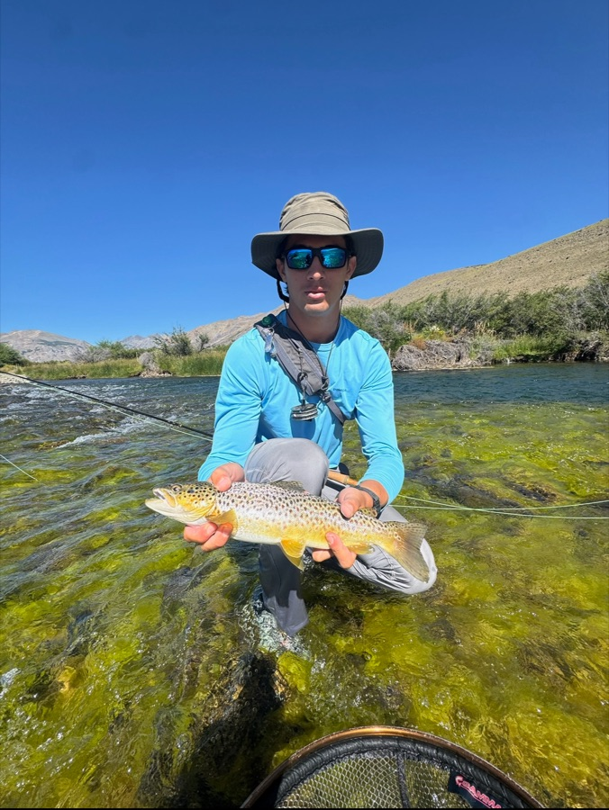
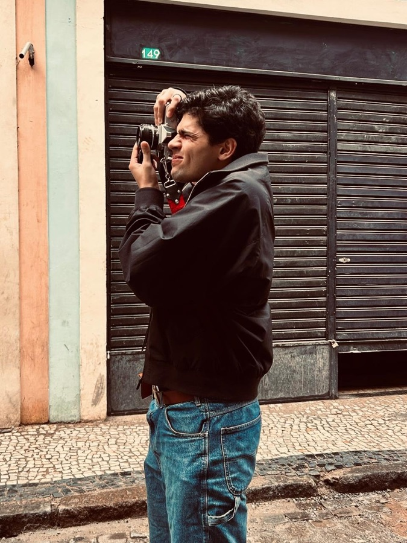
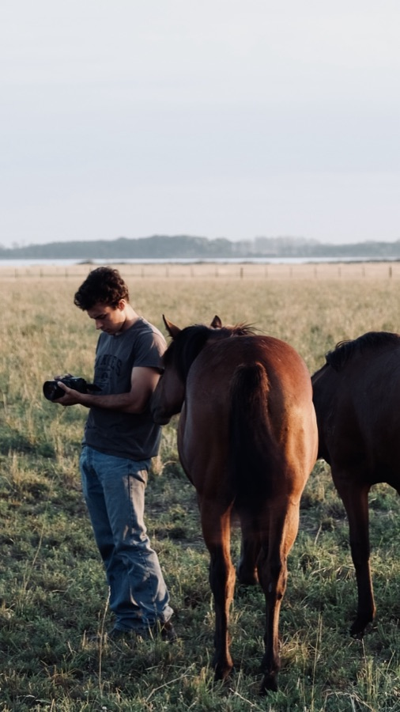
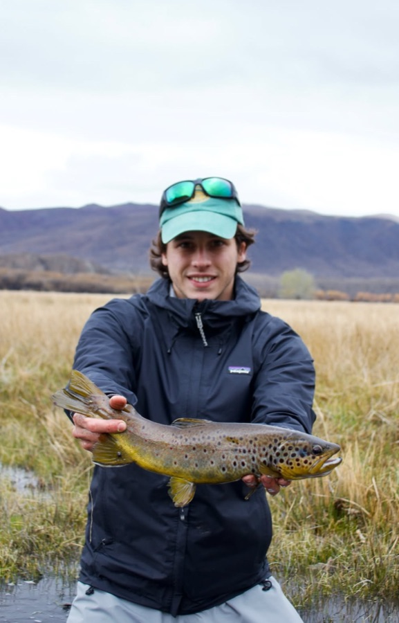

Compramos el colectivo entre los cuatro. Esto es quién hace qué.

De acá salió todo: la necesidad de explorar, buscar aventura y pescar con mosca en la Patagonia. Filma y arma el rumbo del viaje.

Apasionado por la fotografía — va a ser quien documente el viaje en imagen fija.

A cargo de grabar y armar el documental del viaje, de punta a punta.

Apasionado por la pesca con mosca — el cuarto socio del colectivo y de la aventura.